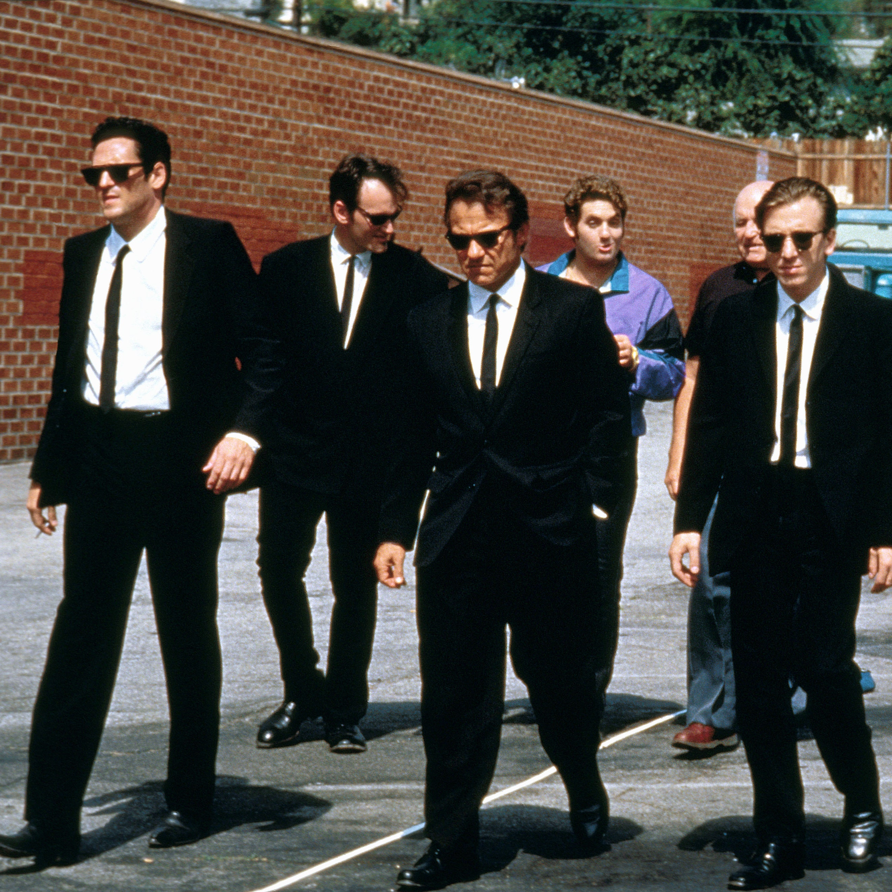

inheritance alows us to wirite more global styles on parent elements and then "fine-tune" the styles for some of the child elements as [...]
Reservoir Dogs is a 1992 American crime film written and directed by Quentin Tarantino in his feature-length debut. It stars Harvey Keitel, Tim Roth, Chris Penn, Steve Buscemi, Lawrence Tierney, Michael Madsen, Quentin Tarantino, and Edward Bunker as diamond thieves whose planned heist of a jewelry store goes terribly wrong.
